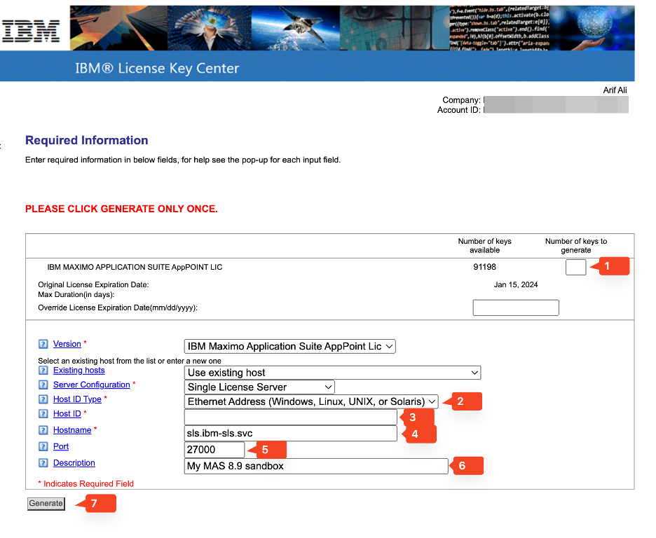

Exercise 1 - Logistics
Objectives
In this Exercise you will learn how to:
-
Arrange the logistical requirements like ...
-
AppPoint license file.
- Container software entitlement key.
AppPoint license file
Business Partners: Ensure you have a valid and renewed Partner Package with the IBM. Follow IBM License Key Center and ensure your Primary Resource Contact can log in to the License Key Center website.
IBMers: Locate Intranet's w3Publisher site of ibm-license-key-mgmt and follow instructions to acquire access to License Key Center.
IBM's current Maximo customers: Work with your IBM sales team to renew or acquire an evaluation license.
New customers: Contact IBM's business partners or IBM's tech sales to get started.
Download or make available your license.dat file. Use the following guide to make your choices.

1. Type the number of AppPoints.
2. Drop-down and select Ethernet Address
3. Create a 12-digit random hex number. This random hex number becomes your Host ID. The same Host ID becomes SLS_LICENSE_ID which you will enter in env.sh file.
hexdump -vn 6 -e ' /1 "%02x"' /dev/urandom ; echo
4. Type the Hostname: sls.ibm-sls.svc
5. Type the port number: 27000
6. Write down a note as description.
7. Click Generate.
Container software entitlement key
1. Log in using your IBM ID and create or copy your entitlement key: IBM Container Software library. Save this long string key somewhere safe.